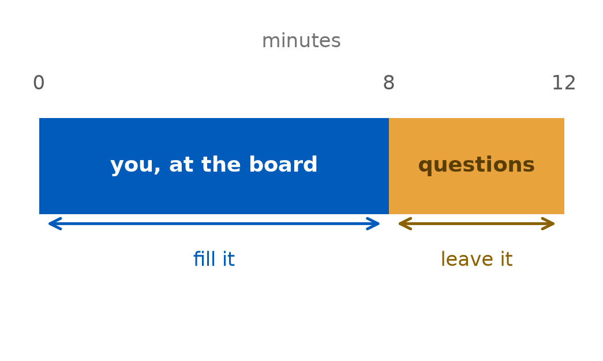
PHY 208 · Special Relativity · Lecture 9
2026-09-22
Today needs a device. One laptop or phone per pair, same as Thursday. Sit with your pair and open this now, before the physics starts:
Presentations start Thursday — Michelson, Bradley, Rømer. Two slides on how they work, next.
Later today you build a map by hand. Sheets and rulers are provided; bring a pencil.
Notebook entry from Thursday’s interval demo due 11:00 today. Milestone 1 due Fri Oct 2.
12 minutes: 8 at the board, 4 of questions.
No slides. Whiteboard and your own notes. Nothing to project, nothing to hide behind.
Both partners present, both must be there. A partner who does not show up scores zero, whatever the other one does.
One sentence about AI at the start — which tool and what for, or none.

Aim for eight minutes, and leave four. Not six, not twelve: eight minutes of physics is what the exercise is worth, and the four questions are the part that is assessed. Practise once with a timer.
While a group presents, you write one question. Not a compliment, not a summary.
Where · UB Learns → Discussions → Audience questions When · while they present; the timestamp is graded Credit · one point each, for asking. Three lowest dropped
You cannot see anyone else’s question until you post your own.
A good question names a step they took.
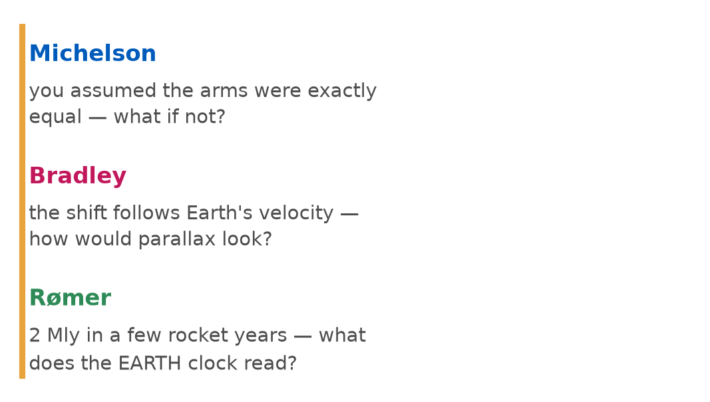
The presenting group is graded mostly on the questions, so yours is not a formality — I call on some of you to ask out loud, and the group answers yours in writing afterwards.
“Relativity proves everything is relative and nothing is really true.” Name something that is not relative.
Two of your answers beat the slide I had written.
“If a muon reaches Earth, all frames must agree that that muon reaches Earth.”
“The speed of causality, and the spacetime interval, are not relative.”
An invariant on no slide — the event itself — and a better name for what \(c\) limits. Both are why order and cause survive.
That is the honest question of the week, and it is why today exists.
You have the formula. What you do not have yet is the picture it is a statement about.
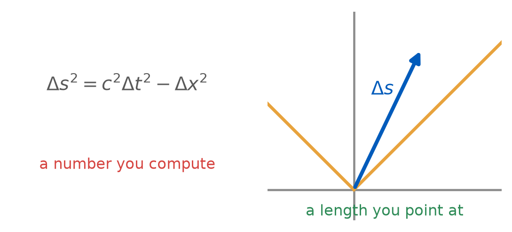
By the end of the hour it is something you can point at.
From L04, and none of it has changed:
Time up, space across, axis in \(ct\) — so light is 45°, always.
A dot is an event, a line is a worldline. Vertical means at rest in this frame.
The cone sorts every event into future, past or elsewhere, and no boost moves one between them.
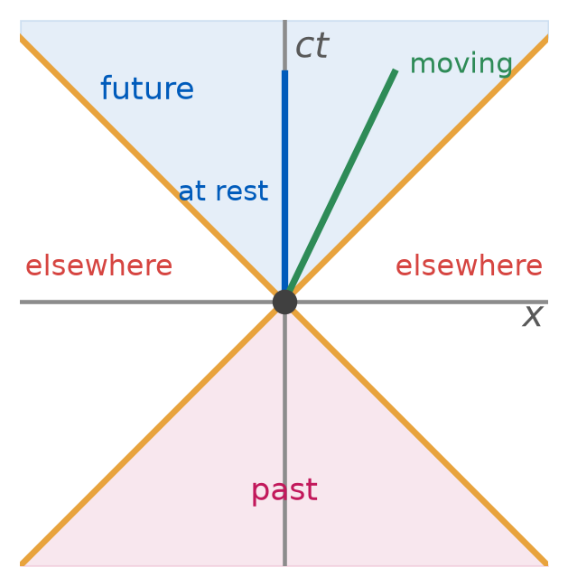
Nothing new here. Today: what the diagram does once you can put a scale on it, which is the one thing L04 left out.
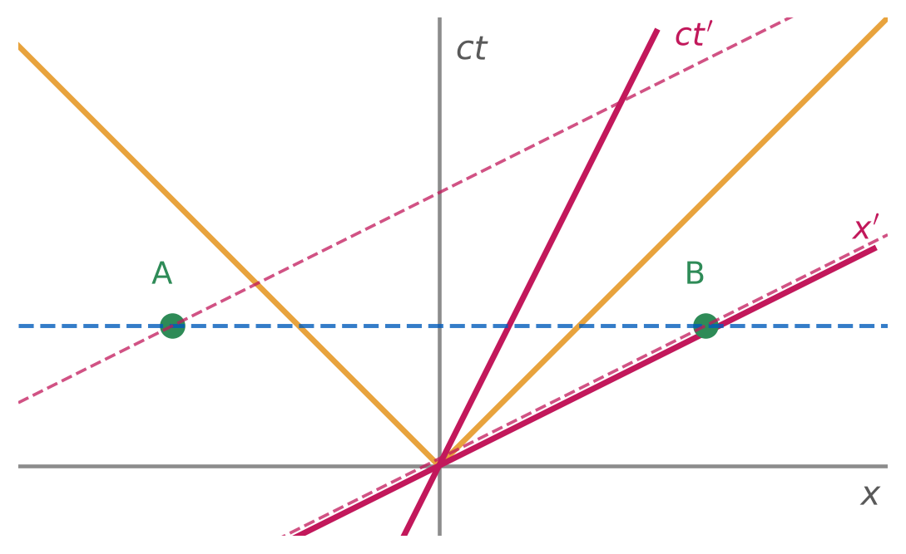
The ship’s axes close inward on the light line, by the same angle: \(x' = 0\) is where the ship is, \(t' = 0\) is what it calls now.
Blue dashed is my “at once”. Pink dashed is the ship’s. Same two dots, and the disagreement is entirely about which lines count as horizontal.
So: A and B are simultaneous for me, and for the ship B comes first.
What the diagram still cannot tell you: how far apart the tick marks are on those pink axes.
Your screen has a slider and a readout. Know what each entry is:
| \(\beta\) | \(v/c\) for the primed frame | the slider |
| \(\gamma\) | \(1/\sqrt{1-\beta^{2}}\) | follows the slider |
| \(\Delta t\), \(\Delta t'\) | time between A and B, each frame | both change |
| \(\Delta s^{2}\) | the interval between A and B | watch this one |
Buttons you will need: Primed axes · Simultaneity · Invariant hyperbola · the four presets along the bottom.
In your pairs, on your own device. Preset timelike, slider at \(\beta = 0\). Leave every toggle as it is.
Before you touch the slider, both of you write in your notebook:
I will sweep \(\beta\) from \(0\) to \(0.9\). Name one thing on the screen that will move, and one that will not.
Commit to both. Then sweep, slowly.
Record three rows, at \(\beta = 0,\ 0.5,\ 0.9\):
\[\Delta t' \qquad \Delta x' \qquad \Delta s^{2}\]
Only then press the last toggle in the row. Write one sentence about what it shows.
Show of hands: who predicted a hyperbola?
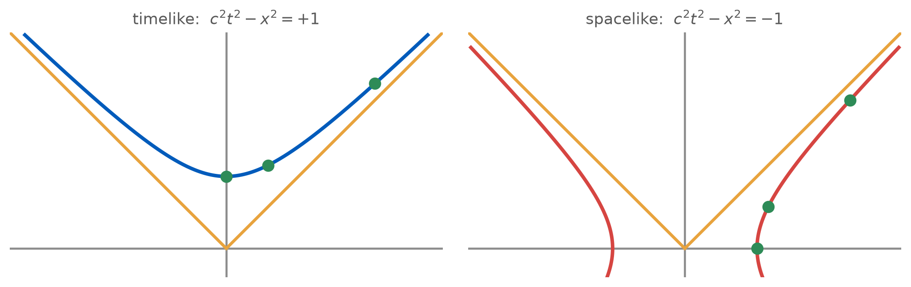
Ask where could this event sit, for another observer, with the same interval? The answer is a hyperbola. Rotations sweep circles; boosts sweep these — Tuesday’s promise, delivered as a picture.
The tilted axes have no tick marks yet, and you cannot borrow mine: a ruler laid on the \(x\) axis is not a ruler on \(x'\).
So use the one thing both frames agree on. Where the hyperbola \(c^{2}t^{2} - x^{2} = 1\) crosses an axis, that axis reads 1.
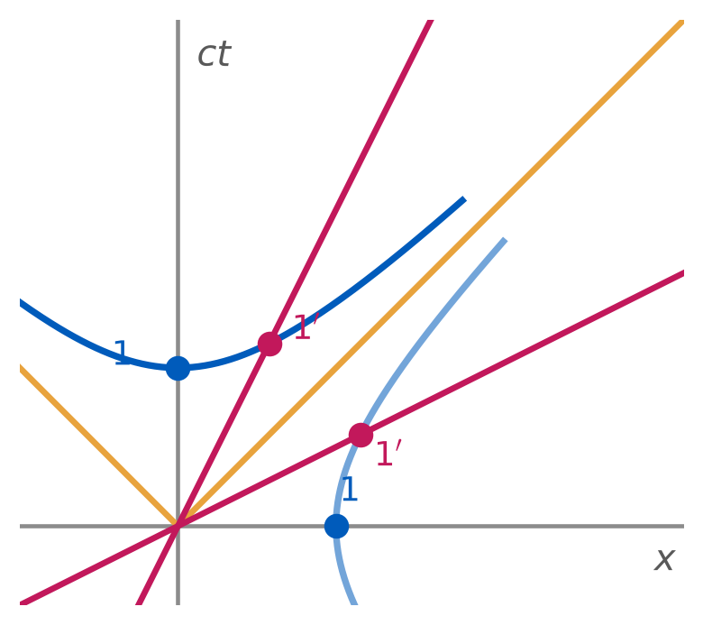
The primed tick sits further out, at \(\gamma(1, \beta)\). Neither ruler is wrong: both are calibrated against the same invariant.
“Euclidean geometry is the wrong geometry and betrays us when we try to lay out time along one direction on the page.” — TW §5.3
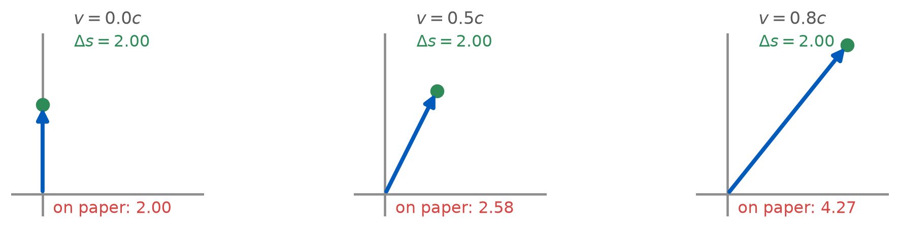
Same events, same interval, three page lengths — and the page length is the one number that means nothing.
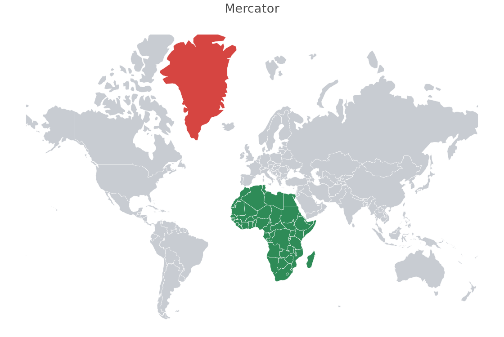
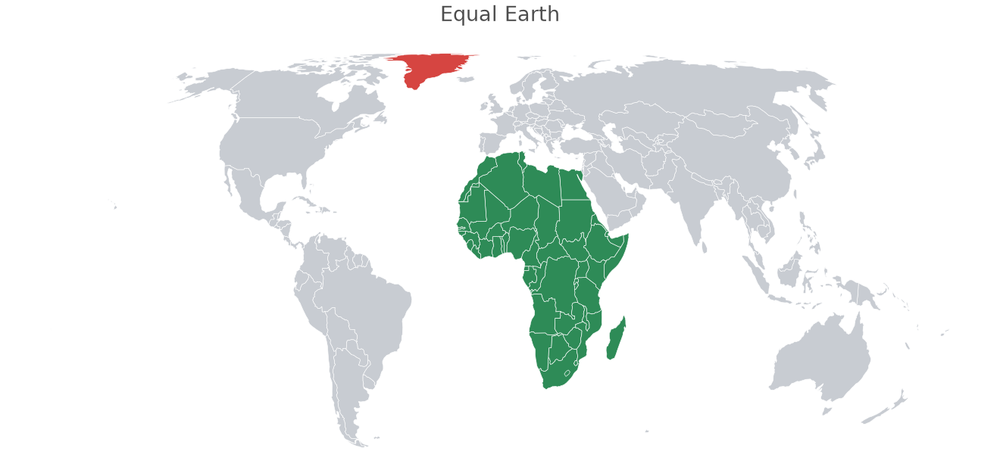
Same data, same countries, two projections. Africa is 14 Greenlands — and only one of these maps says so.
Mercator built it for navigation, and it solves that completely. It was never meant as a picture of how big things are.
Peters attacked it as colonial propaganda. Cartographers objected that his map was neither new nor good — the political point landed anyway.
Equal Earth: equal area, and continents that still look like themselves.
The UN adopted Correct the Map, 164 votes to 1.
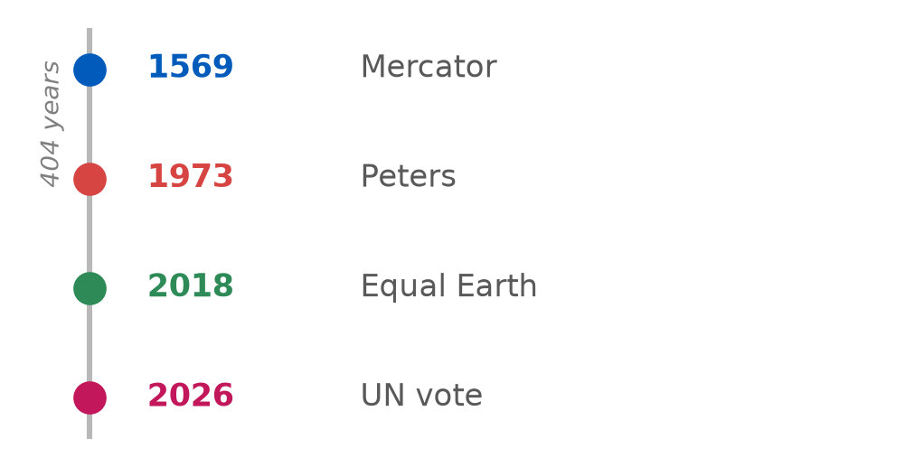
Four centuries of argument about one projection choice — a map that distorts silently shapes what people believe.
A spacetime diagram is the same kind of object.
It is faithful about causality — the cone is 45° for everyone — and it lies about distance.
Knowing which lie you hold is the skill.
One twin stays. One flies to a star at \(0.80c\) and comes straight back. They part at one event and meet again at another.
Earth says the ship’s clock ran slow, so the traveller is younger. The ship says Earth moved, so Earth should be younger.
Both use this week’s physics, correctly. They cannot both be right: at a reunion two watches side by side read two numbers.
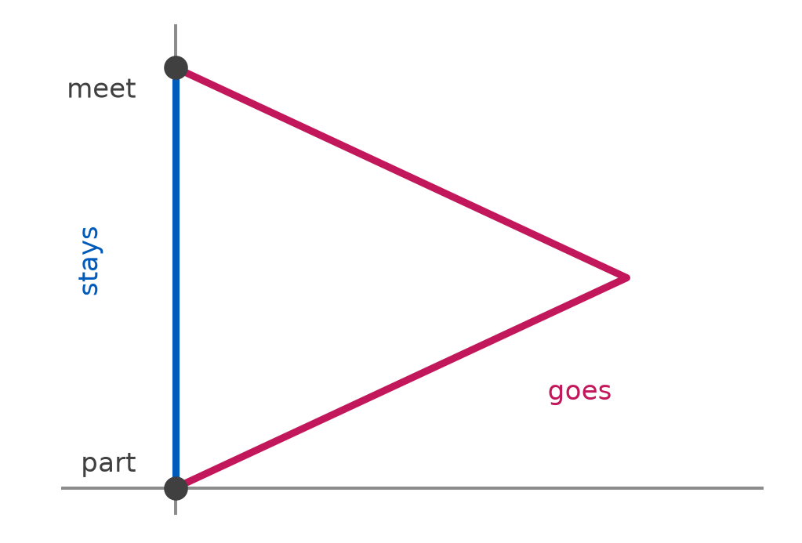
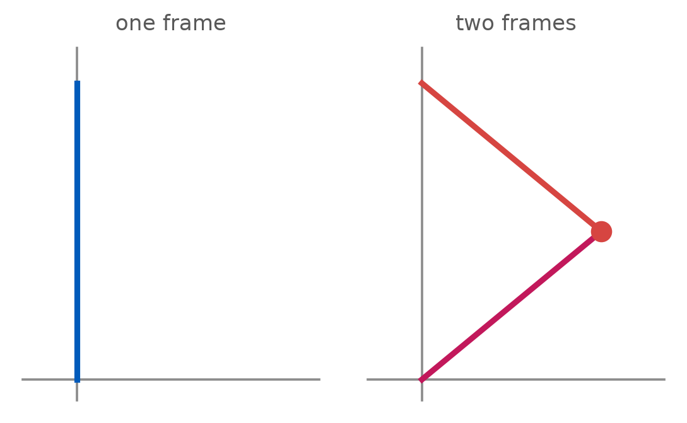
Earth: yes, start to finish.
The traveller: no — one frame out, a different frame back.
The two histories are not mirror images, and the bend is visible before any number is computed.
No general relativity needed. Acceleration is the marker of the asymmetry, not the mechanism — special relativity handles accelerated observers perfectly well.
beta = 0.80 star at 4.0 ly gamma = 1.667
stays: 10.00 yr straight worldline
travels: 6.00 yr = 2 x sqrt(25 - 16) = 2 x 3.0
difference: 4.00 yrEach leg is straight, so each leg’s proper time is just its interval — today’s formula, applied twice.
6 years against 10. The bent worldline is the shorter one in proper time: in this geometry straight is longest, and that is the minus sign again.
A fair objection: acceleration really does break real clocks.
| clock | hard turn? |
|---|---|
| pendulum | no — useless in stop-and-go traffic |
| wristwatch | yes — not against a wall |
| radioactive nucleus | yes — indifferent |
Smaller clock, sharper kink tolerated.
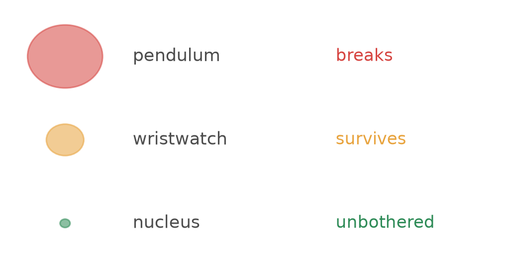
So we idealise: an acceleration-proof clock, small enough that the kink costs it nothing. The muon is very nearly one.
It is tempting to say the acceleration causes the ageing. It does not.
Send the traveller further at the same speed, with an identical turnaround:
2.0 ly: Earth 5.00 ship 3.00 gap 2.00
4.0 ly: Earth 10.00 ship 6.00 gap 4.00
8.0 ly: Earth 20.00 ship 12.00 gap 8.00
16.0 ly: Earth 40.00 ship 24.00 gap 16.00Identical turnaround every time, wildly different gaps. The bend marks where the symmetry breaks; what sets the size is the length of the coasting legs.
On a spacetime diagram I draw two events, P and Q. They lie on the same invariant hyperbola, the one with an interval of +4 from the origin. P sits on my time axis and Q is off to the right.
(a) Q is farther from the origin than P, since it is farther away on the page
(b) P and Q are simultaneous in my frame, since one hyperbola is one moment
(c) Some frame puts Q on its own time axis, and in that frame Q is at rest at the origin’s location
(d) No single frame can contain both P and Q, since they sit on the same curve
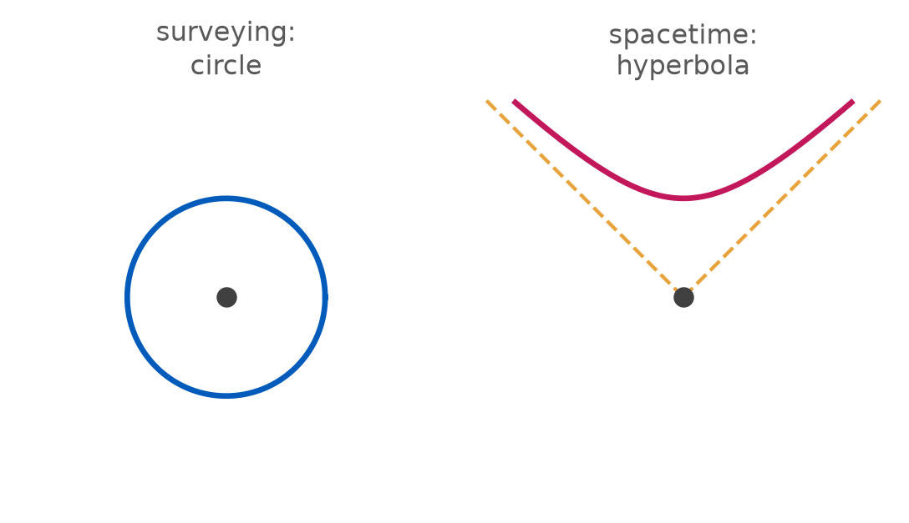
A surveyor locates every point a given distance from a stake by drawing a circle around it.
You locate every event a given interval from an event by drawing a hyperbola through it.
Same procedure, one curve swapped — and that swap is the minus sign.
So: given nothing but a table of intervals, you can build the map.
Three trees. You are told only the distances between them, in metres — no coordinates, no directions.
| A | B | C | |
|---|---|---|---|
| A | 0 | 3 | 5 |
| B | 0 | 4 |
Where do you put them on paper?
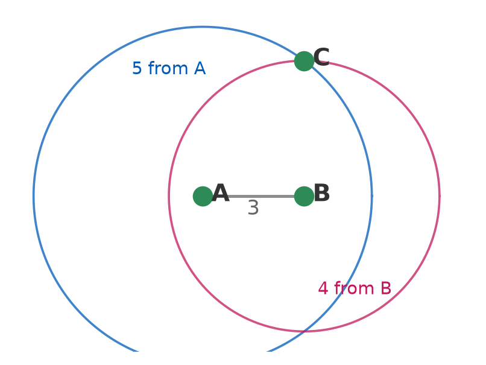
Stake at A. Circle of radius 5. Circle of radius 4 around B. C is where they cross — and there are two crossings, both correct.
You have a table of intervals and no coordinates. Build the map.
In pairs, 10 min. Two sheets: the MAP you draw on, the SLIDER you lay on top. Seven steps, printed on the map sheet.
Use the paper. Slider on top, hold both up to the window. Both sheets print at the same scale, so line up the axes once and they stay lined up.
Pencil, pressed lightly. You trace four curves and need only where they cross.
The one that goes wrong
The slider’s vertex is the event you measure from. It moves to B, then to C — it does not stay at the origin.
Checkpoint after step 5 — sheets up, and I will look.
No window? The same sheet is online, to put behind the paper — laserlab.github.io/phy208/Lectures/L09/hyperbolae.html (F hides the text).
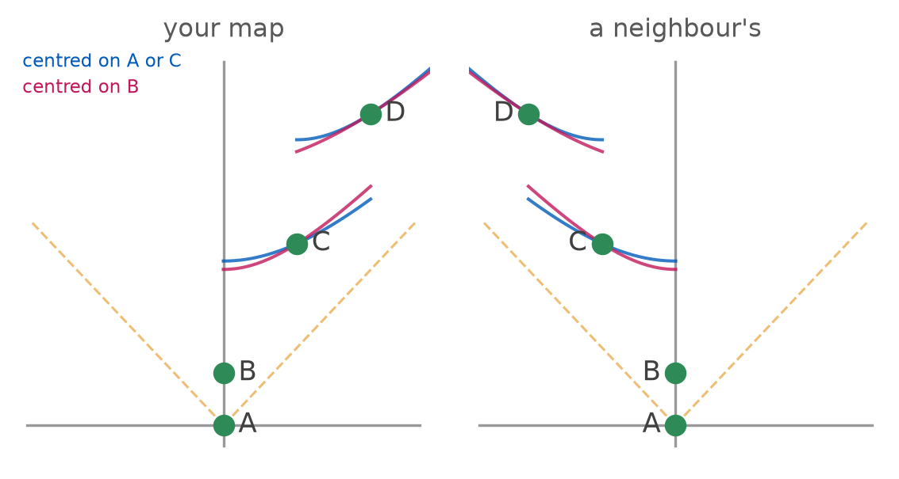
A and B are the same in every map — everyone put A at the origin and B on the time axis above it.
Step 5 offered two crossings. That one choice mirrors C and D, and every interval in the table is identical in both.
The map is a choice. The table is the physics — and the whole lecture is the machinery for getting from one to the other.
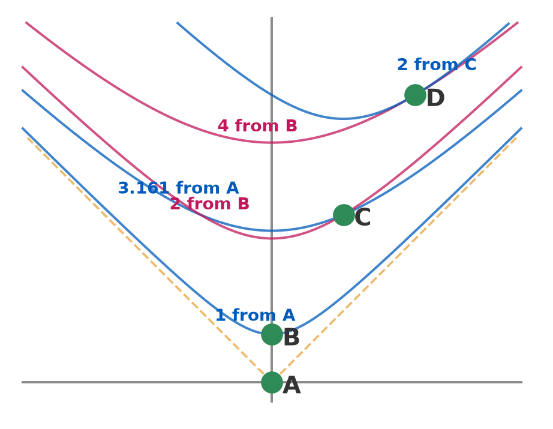
Every curve is labelled with its interval and the event it is measured from. Each event sits where two of them cross, and every crossing reproduces the table you started from.
| what you draw | what you read off |
|---|---|
| tilted \(x'\) axis | relativity of simultaneity |
| the 45° cone | who can cause what |
| the calibration hyperbola | the interval, the tick marks, and the map itself |
| two worldlines between the same events | who comes back younger |
| the page distance | nothing at all |
Nothing new was assumed today. The same postulates, drawn — and the last two rows are what that bought: a famous paradox became arithmetic, and a table of intervals became a map you drew yourself.
From one of your tickets: “If everything were relative, nothing would be computable. The differences between frames are computable.”
| Presentations | Michelson, Bradley, Rømer — they go first |
| The pole and the barn | a 20 m pole inside a 10 m barn, doors shut |
| The bug and the rivet | who gets squashed, and in whose frame |
| The tool | relativity of simultaneity, every single time |
| Prep check 5 | due Tue 10:30 — the twin paradox, TW ch. 4 |
| Notebook | today’s hyperbola entry due 11:00 Thursday |
On a spacetime diagram, two events lie on the same invariant hyperbola centred on the origin.
On UB Learns, under Quizzes. Due 11:59 tonight.
Not graded, ever — I read these to decide what to spend class time on. “I don’t follow this, and here is where I lost it” is a useful answer.
PHY 208 — Spacetime Diagrams Tim Thomay · University at Buffalo · Fall 2026
Course material licensed CC BY-SA 4.0
Images retain their original licenses — see img/CREDITS.md